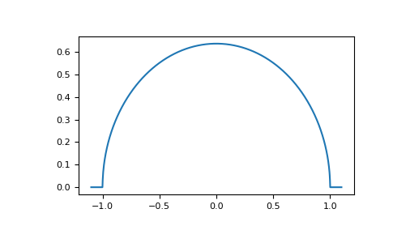
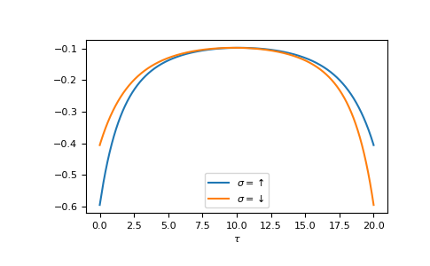

Tutorial¶
Lattice Green’s functions¶
This tutorial explains some of the basic functionality. Throughout the tutorial we assume you have imported GfTool as
>>> import gftool as gt
and the typical packages numpy and matplotlib are made available
>>> import numpy as np
>>> import matplotlib.pyplot as plt
The package contains non-interacting Green’s functions for some tight-binding
lattices. They can be found in gftool.lattice.
E.g. the dos of the Bethe lattice bethe:
>>> ww = np.linspace(-1.1, 1.1, num=1000)
>>> dos_ww = gt.lattice.bethe.dos(ww, half_bandwidth=1.)
>>> __ = plt.plot(ww, dos_ww)
>>> plt.show()
{kind=link}

Typically, a shorthand for these functions exist in the top-level module e.g.
gftool.bethe_dos
>>> gt.bethe_dos is gt.lattice.bethe.dos
True
Density¶
We can also calculate the density (occupation number) from the imaginary axis for local Green’s function. We have the relation
to calculate the density for a given temperature from 1024 (fermionic)
Matsubara frequencies we use density_iw:
>>> temperature = 0.02
>>> iws = gt.matsubara_frequencies(range(1024), beta=1./temperature)
>>> gf_iw = gt.bethe_gf_z(iws, half_bandwidth=1.)
>>> occ = gt.density_iw(iws, gf_iw, beta=1./temperature)
>>> occ
0.5
We can also search the chemical potential \(μ\) for a given occupation chemical_potential.
If we want e.g. the Bethe lattice at quarter filling
>>> occ_quarter = 0.25
>>> def bethe_occ_diff(mu):
... """Calculate the difference to the desired occupation, note the sign."""
... gf_iw = gt.bethe_gf_z(iws + mu, half_bandwidth=1.)
... return gt.density_iw(iws, gf_iw, beta=1./temperature) - occ_quarter
...
>>> mu = gt.chemical_potential(bethe_occ_diff)
>>> mu
-0.406018...
Validate the result:
>>> gf_quarter_iw = gt.bethe_gf_z(iws + mu, half_bandwidth=1.)
>>> gt.density_iw(iws, gf_quarter_iw, beta=1./temperature)
0.249999...
Fourier transform¶
GfTool offers also accurate Fourier transformations between Matsubara frequencies
and imaginary time for local Green’s functions, see gftool.fourier.
As a major part of the package, these functions are gu-functions.
This is indicated in the docstrings via the shapes (…, N). The ellipsis
stands for arbitrary leading dimensions. Let’s consider a simple example with magnetic splitting.
>>> beta = 20 # inverse temperature
>>> h = 0.3 # magnetic splitting
>>> eps = np.array([-0.5*h, +0.5*h]) # on-site energy
>>> iws = gt.matsubara_frequencies(range(1024), beta=beta)
We can calculate the Fourier transform using broadcasting, with the need for any loops.
>>> gf_iw = gt.bethe_gf_z(iws + eps[:, np.newaxis], half_bandwidth=1)
>>> gf_iw.shape
(2, 1024)
>>> gf_tau = gt.fourier.iw2tau(gf_iw, beta=beta)
The Fourier transform generates the imaginary time Green’s function on the interval \(τ ∈ [0^+, β^-]\)
>>> plt.clf() # clear previous figure
>>> tau = np.linspace(0, beta, num=gf_tau.shape[-1])
>>> __ = plt.plot(tau, gf_tau[0], label=r'$\sigma=\uparrow$')
>>> __ = plt.plot(tau, gf_tau[1], label=r'$\sigma=\downarrow$')
>>> __ = plt.xlabel(r'$\tau$')
>>> __ = plt.legend()
>>> plt.show()
{kind=link}

We see the asymmetry due to the magnetic field. Let’s check the back transformation.
>>> gf_ft = gt.fourier.tau2iw(gf_tau, beta=beta)
>>> np.allclose(gf_ft, gf_iw, atol=2e-6)
True
Up to a certain threshold the transforms agree, they are not exact inverse transformations here. Accuracy can be improved e.g. by providing (or fitting) high-frequency moments.